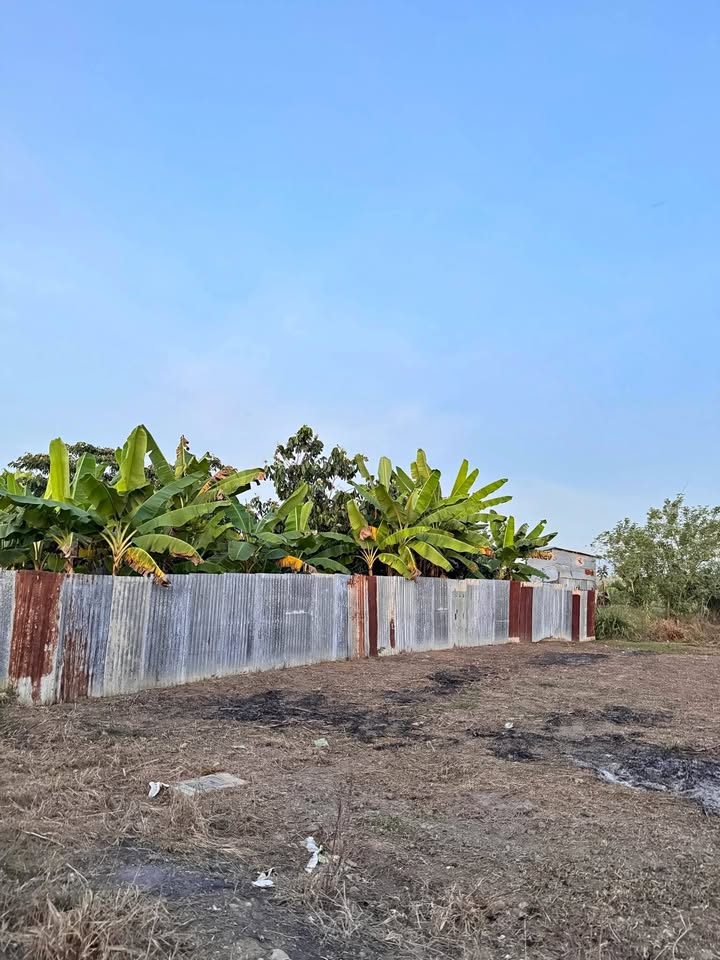

PEN55 150 m²

El terreno está ubicado a pocas cuadras del mercado Santa Anita y terminal terrestre de Tarapoto. Tiene salida a la nueva vía Evitamiento. El terreno ya tiene código registral , agua y luz me pueden contactar al [hidden information] para brindarles más información.